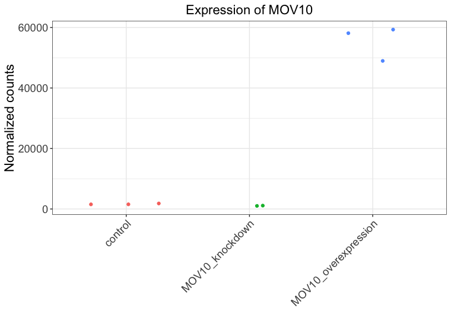

Day4 Intro to R Answer Key
Homework answer key - Introduction to R practice¶
Creating vectors/factors and dataframes¶
-
We are performing RNA-Seq on cancer samples being treated with three different types of treatment (A, B, and P). You have 12 samples total, with 4 replicates per treatment. Write the R code you would use to construct your metadata table as described below.
- Create the vectors/factors for each column (Hint: you can type out each vector/factor, or if you want the process go faster try exploring the
rep()function).
sex <- c("M", "F",...) # saved vectors/factors as variables and used c() or rep() function to create- Put them together into a dataframe called
meta.
rownames()function to assign row names to the dataframe (Hint: you can type out the row names as a vector, or if you want the process go faster try exploring thepaste()function).rownames(meta) <- c("sample1", "sample2",... , "sample12") # or use: rownames(meta) <- paste("sample12", 1:12, sep="")Your finished metadata table should have information for the variables
sex,stage,treatment, andmyclevels:sex stage treatment myc sample1 M I A 2343 sample2 F II A 457 sample3 M II A 4593 sample4 F I A 9035 sample5 M II B 3450 sample6 F II B 3524 sample7 M I B 958 sample8 F II B 1053 sample9 M II P 8674 sample10 F I P 3424 sample11 M II P 463 sample12 F II P 5105 - Create the vectors/factors for each column (Hint: you can type out each vector/factor, or if you want the process go faster try exploring the
Subsetting vectors/factors and dataframes¶
-
Using the
metadata frame from question #1, write out the R code you would use to perform the following operations (questions DO NOT build upon each other):- return only the
treatmentandsexcolumns using[]:
- return the
treatmentvalues for samples 5, 7, 9, and 10 using[]:
- use
filter()to return all data for those samples receiving treatmentP:
- use
filter()/select()to return only thestageandtreatmentdata for those samples withmyc> 5000:
- remove the
treatmentcolumn from the dataset using[]:
- remove samples 7, 8 and 9 from the dataset using
[]:
- keep only samples 1-6 using
[]:
- add a column called
pre_treatmentto the beginning of the dataframe with the values T, F, F, F, T, T, F, T, F, F, T, T (Hint: usecbind()):
- change the names of the columns to: "A", "B", "C", "D":
- return only the
Extracting components from lists¶
-
Create a new list,
list_hwwith three components, theglengthsvector, the dataframedf, andnumbervalue. Use this list to answer the questions below .list_hwhas the following structure (NOTE: the components of this list are not currently named):Write out the R code you would use to perform the following operations (questions DO NOT build upon each other): - return the second component of the list:[[1]] [1] 4.6 3000.0 50000.0 [[2]] species glengths 1 ecoli 4.6 2 human 3000.0 3 corn 50000.0 [[3]] [1] 8- return
50000.0from the first component of the list:
- return the value
humanfrom the second component:
- give the components of the list the following names: "genome_lengths", "genomes", "record":
- return
Creating figures with ggplot2¶
{kind=link}
- Create the same plot as above using ggplot2 using the provided metadata and counts datasets. The metadata table describes an experiment that you have setup for RNA-seq analysis, while the associated count matrix gives the normalized counts for each sample for every gene. Download the count matrix and metadata using the links provided.
Follow the instructions below to build your plot. Write the code you used and provide the final image.
-
Read in the metadata file using:
meta <- read.delim("Mov10_full_meta.txt", sep="\t", row.names=1) -
Read in the count matrix file using:
data <- read.delim("normalized_counts.txt", sep="\t", row.names=1) -
Create a vector called
expressionthat contains the normalized count values from the row indatathat corresponds to theMOV10gene.
- Check the class of this expression vector.
data.frame
Then, will need to convert this to a numeric vector using as.numeric(expression)
- Bind that vector to your metadata data frame (
meta) and call the new data framedf.
-
Create a ggplot by constructing the plot line by line:
-
Initialize a ggplot with your
dfas input. -
Add the
geom_jitter()geometric object with the required aesthetics -
Color the points based on
sampletype -
Add the
theme_bw()layer -
Add the title "Expression of MOV10" to the plot
-
Change the x-axis label to be blank
-
Change the y-axis label to "Normalized counts"
-
Using
theme()change the following properties of the plot:-
Remove the legend (Hint: use ?theme help and scroll down to legend.position)
-
Change the plot title size to 1.5x the default and center align
-
Change the axis title to 1.5x the default size
-
Change the size of the axis text only on the y-axis to 1.25x the default size
-
Rotate the x-axis text to 45 degrees using
axis.text.x=element_text(angle=45, hjust=1)
-
ggplot(df) + geom_jitter(aes(x= sampletype, y= expression, color = sampletype)) + theme_bw() + ggtitle("Expression of MOV10") + xlab(NULL) + ylab("Normalized counts") + theme(legend.position = "none", plot.title=element_text(hjust=0.5, size=rel(1.5)), axis.text=element_text(size=rel(1.25)), axis.title=element_text(size=rel(1.5)), axis.text.x=element_text(angle=45, hjust=1)) -
{kind=link}
Attribution notice
-
This lesson has been developed by members of the teaching team at the Harvard Chan Bioinformatics Core (HBC). These are open access materials distributed under the terms of the Creative Commons Attribution license (CC BY 4.0), which permits unrestricted use, distribution, and reproduction in any medium, provided the original author and source are credited.
-
The materials used in this lesson are adapted from work that is Copyright © Data Carpentry (http://datacarpentry.org/).
-
All Data Carpentry instructional material is made available under the Creative Commons Attribution license (CC BY 4.0).